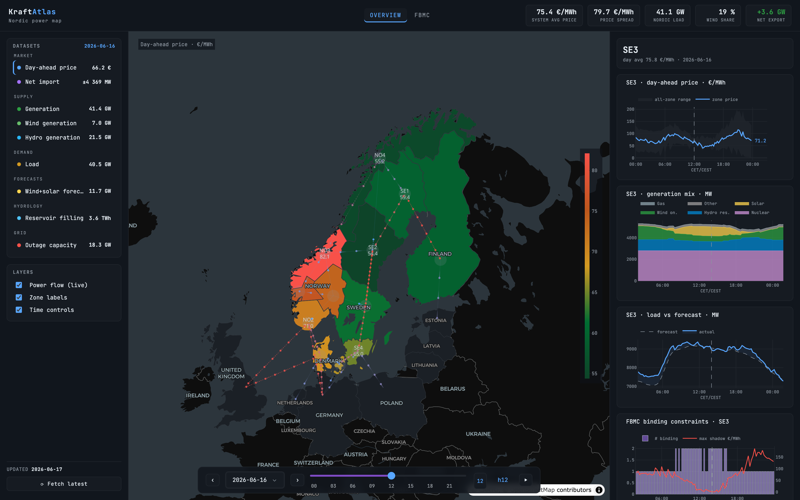
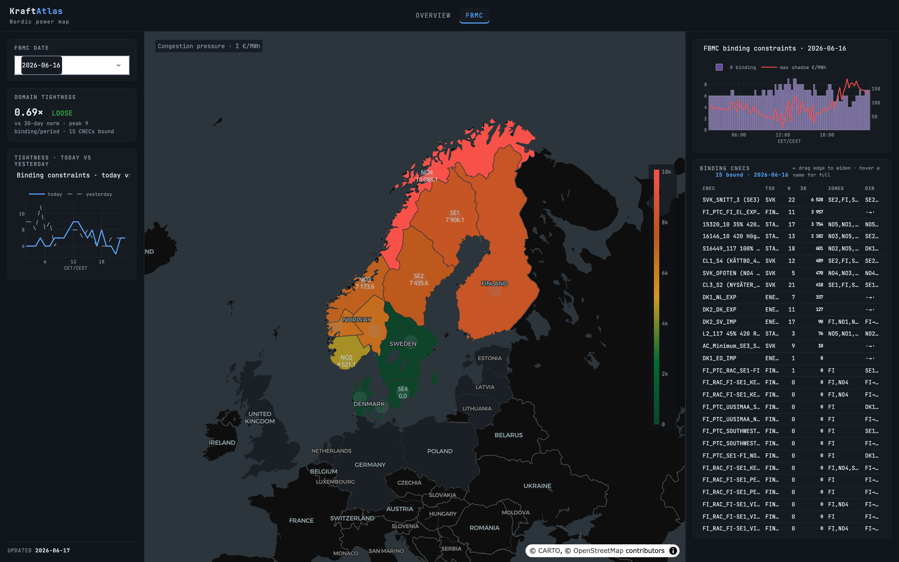

The Nordic grid,
read in real time.
Plus the edge nobody else publishes.
Generation, prices, flows, hydro and flow-based congestion on one live map — and calibrated spread-risk forecasts for the zone pairs traders actually hedge.
The Nordic market went flow-based. The data didn't get any friendlier.
The signal that moves Nordic spreads is buried in thousands of constraint rows an hour — and the people who can read it sell it back to you behind a sales call.
Raw & awkward
JAO publishes flow-based domains as thousands of CNEC rows per hour. Useful in theory, unreadable in practice without grid-topology context.
Spreads, not zones
Congestion rent and hedge basis live in the spread — SE3–SE4, NO2–DE, SE2–SE3. Most tools still hand you zonal prices and leave the math to you.
Gated & expensive
The best Nordic analytics sit behind enterprise contracts and demos. There is no clean, public front door you can just open and read.
One live map of the whole Nordic system.
Open it and read the situation in seconds: day-ahead prices, generation by source, load vs. forecast, hydro reservoirs, outages and live cross-border flows — every bidding zone, refreshed each morning.
- Choropleth map you can drive by metric — price, net import, wind, hydro, load
- Per-zone detail: price curve, generation mix, load-vs-forecast, FBMC constraints
- Live flow overlay on all 27 interconnectors
- Bloomberg-terminal aesthetic — no login, no sales call

Read what's binding — then forecast the spread.
Kraftatlas parses the flow-based domain into something you can act on: which constraints are binding, how tight the network is versus its norm, and which zones each shadow price is loading on. On top of it, a probabilistic spread-risk forecast for the pairs that matter.
- Network-tightness index vs. trailing norm, and binding-constraint history
- CNEC explorer — sort by shadow price, link the row to the map
- Probabilistic spread forecasts (e.g. SE3–SE4): quantile fans + tail probabilities
- Built for a public, verifiable track record — the one thing competitors can't copy faster than real time

A clean pipeline from public data to a live signal.
Everything runs in the cloud, in-region with the data. Nothing depends on a laptop being awake.
Source
ENTSO-E, JAO flow-based publication and weather pulled every morning into raw storage.
Gold marts
Raw rows transformed daily into tidy per-zone, per-flow and per-CNEC tables — parsed once, properly.
Live map
The dashboard reads gold marts in-region and renders the whole system in one place.
Spread risk
The same marts feed a leakage-proof model that publishes a calibrated spread forecast before gate closure.
From the best public Nordic map to a daily trading habit.
The map
- Full Nordic overview — prices, generation, hydro, flows
- Flow-based module: tightness, binding constraints, CNEC explorer
- Free and public — the front door
The forecast
- Probabilistic spread-risk fans & tail probabilities per pair
- A public, timestamped track record — the moat clock starts
- Automated morning briefs: what's binding and why
The desk tool
- More zone pairs: SE2–SE3, NO2–DE/NL/GB, DK1–DE
- CNEC & tightness alerts, intraday views
- API access for short-term desks
See the Nordic grid the way
it actually behaves.
No login. No demo call. Just the live map — and the start of the only Nordic spread-risk track record built in the open.